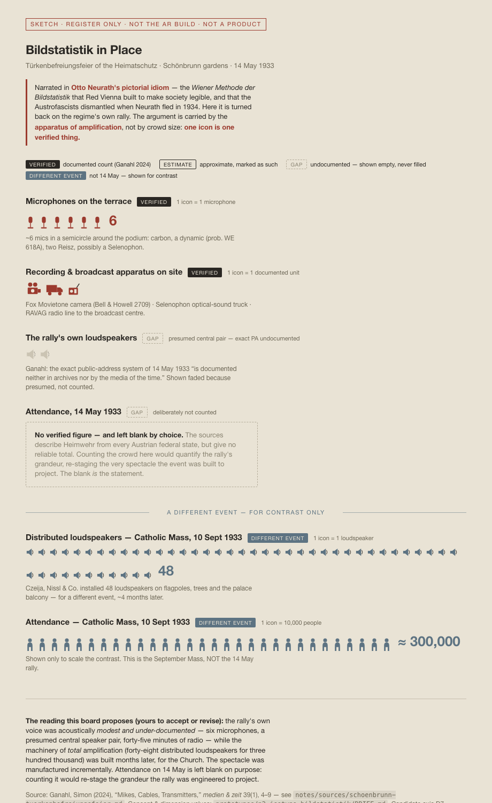
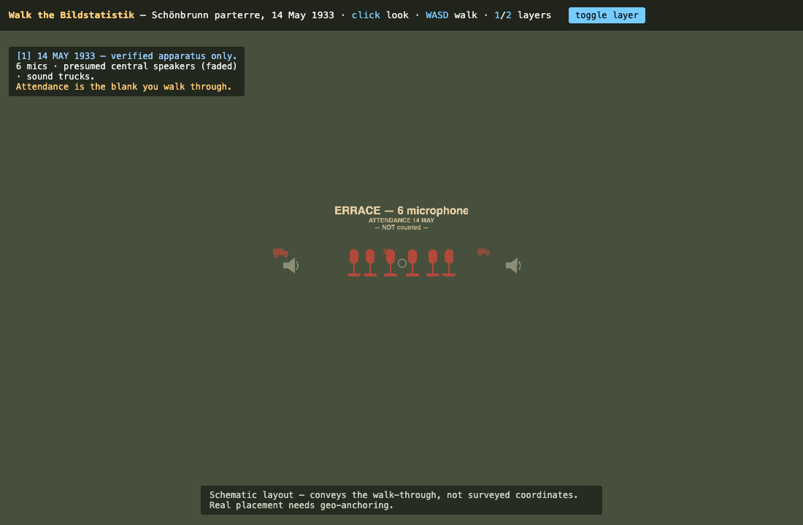

WebXR research prototypes for situated, in-place storytelling at a contested site
Real WebXR. Open on an Android phone in Chrome, tap Start AR, point at the ground, and tap to place content at 1:1. iOS Safari does not support WebXR AR, and these are not geo-pinned to the real site (tap-to-place on a detected surface).
The rally’s verified apparatus — 6 microphones, the recording/broadcast machinery, the presumed PA — placed as Neurath/ISOTYPE pictograms you walk among. The parterre in front is the deliberate attendance blank. Toggle the September contrast.
Launch AR →Two standpoints — the speaker terrace and the participant parterre — with spatialised audio that shifts as you physically walk between them. Audio is placeholder/synthetic and disclosed in the app; the ethical rendering of the speaker standpoint is unresolved.
Launch AR →A WebXR viewer for photoreal 3D-scanned scenes (Gaussian splats) — drop in a .ply/.splat,
view it in the browser (orbit + WASD) or in AR/VR. A separate experiment toward situating real scanned places.
For viewing the content on any device (these are not AR).

The diagrammatic register itself — repeated standardised icons, one icon per verified thing.
Open →
The statistics distributed at 1:1 across a schematic parterre, walked with keyboard + mouse. Press 2 for the September contrast. Desktop only — not AR, not mobile.
Open →